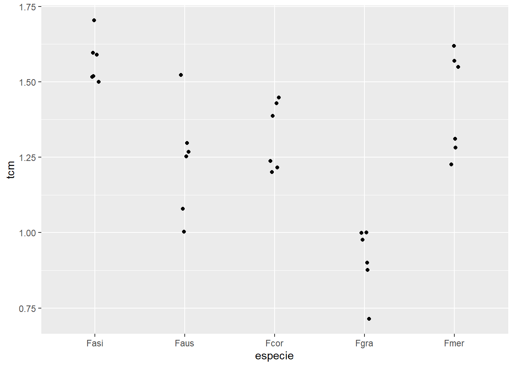
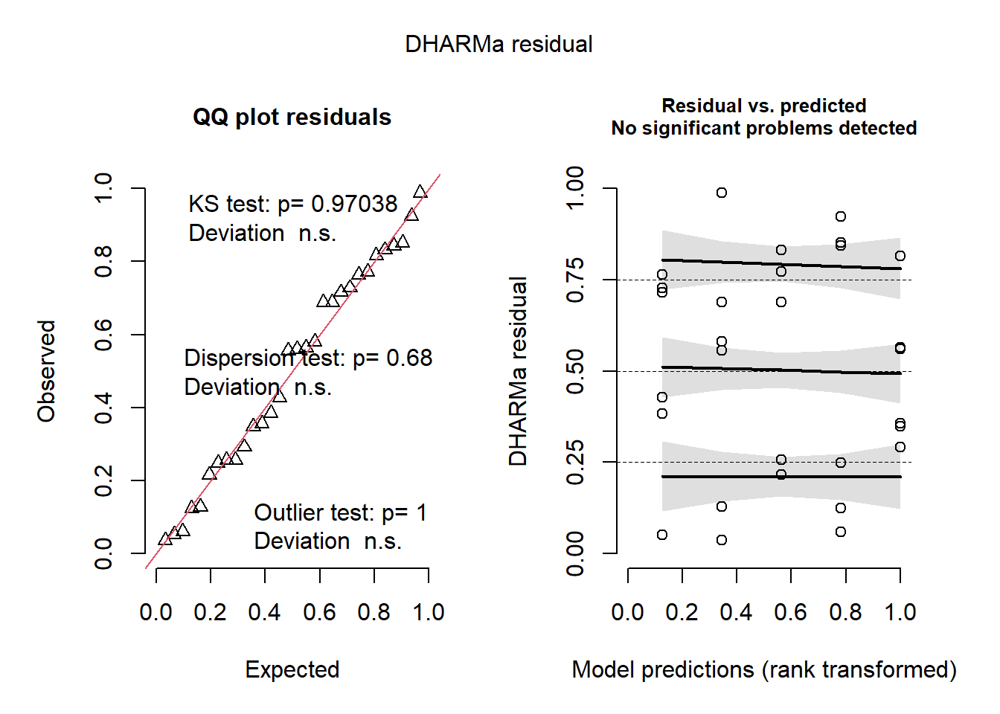
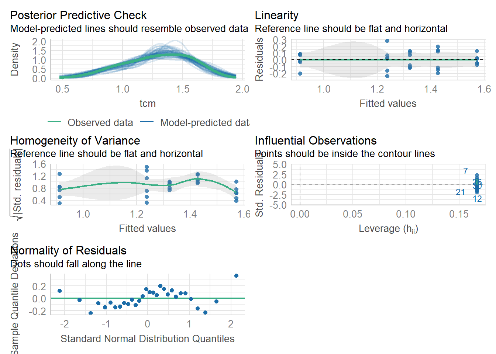

library(gsheet)
mg <- gsheet2tbl("https://docs.google.com/spreadsheets/d/1bq2N19DcZdtax2fQW9OHSGMR0X2__Z9T/edit#gid=983033137")Aula 6
Inferencial
Dois grupos independentes
Primeiro precisamos importar o conjunto de dados utilizando o pacote gsheet.
Visualização
Utilizamos um gráfico boxplot para uma visualização inicial dos dados e observação de características do conjunto.
library(tidyverse)── Attaching core tidyverse packages ──────────────────────── tidyverse 2.0.0 ──
✔ dplyr 1.1.4 ✔ readr 2.1.5
✔ forcats 1.0.0 ✔ stringr 1.5.1
✔ ggplot2 3.5.1 ✔ tibble 3.2.1
✔ lubridate 1.9.3 ✔ tidyr 1.3.1
✔ purrr 1.0.2
── Conflicts ────────────────────────────────────────── tidyverse_conflicts() ──
✖ dplyr::filter() masks stats::filter()
✖ dplyr::lag() masks stats::lag()
ℹ Use the conflicted package (<http://conflicted.r-lib.org/>) to force all conflicts to become errorsmg %>%
ggplot (aes(trat,comp))+
geom_boxplot()
Teste
O teste t é utilizado somente quando há 2 grupos no conjunto de dados. Além disso, é necessário que sejam atendidas as premissas de distribuição normal e a variânça dos grupos sejam homogêneas.
Para realizar o teste t, os dados precisam se apresentar em grupos separados (formato largo). Assim, é preciso utilizar a função pivot_wider() para o conjunto de dados mg. Para execução do teste t utilizamos a função t.test().
mg2 <- mg %>%
pivot_wider(names_from = trat,
values_from = comp)
teste1 <- t.test(mg2$Mg2, mg2$control)
#Para Utilizar o teste t quando as variânças não são homogêneas, deve adicionar var.qual = false
#t.test(mg2$Mg2, mg2$control),
#var.equal = FALSEInterpretação: Pelo teste realizado, temos que a média de Mg2 é 10.52 e a média do controle é de 15.678. O valor do pvalor é menor que 0,05, então se rejeita Ho. O intervalo de confiança apresentado se refere a diferença entre as médias.
Verificar premissas
A função shapiro.test() testa se a distribuição é normal. Se pvalor é maior que 0,05, então não rejeita Ho e assume que há normalidade.
shapiro.test(mg2$control)
Shapiro-Wilk normality test
data: mg2$control
W = 0.93886, p-value = 0.5404shapiro.test(mg2$Mg2)
Shapiro-Wilk normality test
data: mg2$Mg2
W = 0.97269, p-value = 0.9146A função var.test() é utilizada para verificar se as variânças são homogêneas. Quando pvalor é maior que 0,05, então não rejeita Ho e assume que as variânças são homogêneas.
var.test(mg2$control, mg2$Mg2)
F test to compare two variances
data: mg2$control and mg2$Mg2
F = 0.67654, num df = 9, denom df = 9, p-value = 0.5698
alternative hypothesis: true ratio of variances is not equal to 1
95 percent confidence interval:
0.1680428 2.7237436
sample estimates:
ratio of variances
0.6765394 Uma outra forma de verificar normalidade é utilizando as funções gráficas qqnorm() e qqline(). Será um indicativo visual de normalidade, em que, se a maioria dos pontos estiverem sobre a linha há indicativo de normalidade.
qqnorm(mg2$control)
qqline(mg2$control)
Texto complementar
Para criar um texto a respeito dos resultados do teste, pode-se utilizar o pacote report com a função report().
library(report)
report (teste1)Warning: Function `format_text()` is deprecated and will be removed in a future
release. Please use `text_format()` instead.Effect sizes were labelled following Cohen's (1988) recommendations.
The Welch Two Sample t-test testing the difference between mg2$Mg2 and
mg2$control (mean of x = 10.52, mean of y = 15.68) suggests that the effect is
negative, statistically significant, and large (difference = -5.16, 95% CI
[-6.49, -3.83], t(17.35) = -8.15, p < .001; Cohen's d = -3.65, 95% CI [-5.12,
-2.14])Dois grupos dependentes
Quando há dois grupos dependentes, deve ser realizado o teste t pareado.
Importação dos dados
escala <- gsheet2tbl("https://docs.google.com/spreadsheets/d/1bq2N19DcZdtax2fQW9OHSGMR0X2__Z9T/edit#gid=1729131173")Visualização
escala %>%
ggplot (aes(assessment, acuracia)) +
geom_boxplot()
Modificação para formato largo
escala2 <- escala %>%
select(assessment, rater, acuracia) %>%
pivot_wider(names_from = assessment,
values_from = acuracia)Verificação de premissas e teste t
No caso do teste t pareado, adicionamos paired = TRUE ao script do teste.
# Verificar se há normalidade
shapiro.test(escala2$Unaided)
Shapiro-Wilk normality test
data: escala2$Unaided
W = 0.7748, p-value = 0.007155shapiro.test(escala2$Aided1)
Shapiro-Wilk normality test
data: escala2$Aided1
W = 0.92852, p-value = 0.4335#Verificar se as varianças são homogêneas
var.test(escala2$Unaided, escala2$Aided1)
F test to compare two variances
data: escala2$Unaided and escala2$Aided1
F = 20.978, num df = 9, denom df = 9, p-value = 0.000106
alternative hypothesis: true ratio of variances is not equal to 1
95 percent confidence interval:
5.210754 84.459185
sample estimates:
ratio of variances
20.97847 # Realizado com os dados originais
t.test(escala2$Aided1, escala2$Unaided,
paired = TRUE,
var.equal = FALSE)
Paired t-test
data: escala2$Aided1 and escala2$Unaided
t = 4.4214, df = 9, p-value = 0.001668
alternative hypothesis: true mean difference is not equal to 0
95 percent confidence interval:
0.1147647 0.3552353
sample estimates:
mean difference
0.235 Teste não paramétrico
No teste não paramétrico não é necessário o atendimento das premissas para execução do teste estatístico.
Teste
Wilcox test é o equivalente não paramétrico do teste t. Utilizamos a função wilcox.test().
wilcox.test(escala2$Aided1,
escala2$Unaided,
paired = TRUE)Warning in wilcox.test.default(escala2$Aided1, escala2$Unaided, paired = TRUE):
não é possível computar o valor de p exato com o de desempate
Wilcoxon signed rank test with continuity correction
data: escala2$Aided1 and escala2$Unaided
V = 55, p-value = 0.005889
alternative hypothesis: true location shift is not equal to 0Três ou mais grupos de dados
Quando há três ou mais grupos de dados, realizamos uma análise de variânça (ANOVA). A ANOVA irá verificar se pelo menos uma das médias difere das demais.
Importação dos dados
micelial <- gsheet2tbl("https://docs.google.com/spreadsheets/d/1bq2N19DcZdtax2fQW9OHSGMR0X2__Z9T/edit#gid=959387827")Visualização
micelial %>%
ggplot (aes(especie, tcm)) +
geom_jitter(width = 0.05)
ANOVA
Os dados devem ser ajustados para o modelo de ANOVA por meio da função lm() e o teste em si é realizado por meio da função anova(). A função summary permite a visualização de um resumo estatistico do teste.
m1 <- lm(tcm ~ especie, data = micelial)
anova(m1)Analysis of Variance Table
Response: tcm
Df Sum Sq Mean Sq F value Pr(>F)
especie 4 1.46958 0.36739 19.629 2.028e-07 ***
Residuals 25 0.46792 0.01872
---
Signif. codes: 0 '***' 0.001 '**' 0.01 '*' 0.05 '.' 0.1 ' ' 1summary(m1)
Call:
lm(formula = tcm ~ especie, data = micelial)
Residuals:
Min 1Q Median 3Q Max
-0.23667 -0.09667 0.01583 0.08833 0.28333
Coefficients:
Estimate Std. Error t value Pr(>|t|)
(Intercept) 1.57167 0.05585 28.140 < 2e-16 ***
especieFaus -0.33500 0.07899 -4.241 0.000266 ***
especieFcor -0.25000 0.07899 -3.165 0.004047 **
especieFgra -0.66000 0.07899 -8.356 1.05e-08 ***
especieFmer -0.14500 0.07899 -1.836 0.078317 .
---
Signif. codes: 0 '***' 0.001 '**' 0.01 '*' 0.05 '.' 0.1 ' ' 1
Residual standard error: 0.1368 on 25 degrees of freedom
Multiple R-squared: 0.7585, Adjusted R-squared: 0.7199
F-statistic: 19.63 on 4 and 25 DF, p-value: 2.028e-07# coloca -1 após a especie para ter as médias diretamenteVerificação de premissas
Na análise de variânça utilizamos a função shapiro.test() para verificação da normalidade e a função bartlett.test() para verificação da homogeneidade da variânça.
shapiro.test(m1$residuals)
Shapiro-Wilk normality test
data: m1$residuals
W = 0.9821, p-value = 0.8782bartlett.test(tcm ~ especie, data = micelial)
Bartlett test of homogeneity of variances
data: tcm by especie
Bartlett's K-squared = 4.4367, df = 4, p-value = 0.3501Nomenclaturas ANOVA: sum sq = somatório dos quadrados; df = graus de liberdade; mean sq = média dos quadrados -> sum sq / df; F value = valor F -> Mean sq fator / Mean sq residuo
Grupos distintos
Para verificar os grupos que são distintos estatisticamente, primeiro calculamos as médias dos grupos por meio da função emmeans() do pacote emmeans. Depois utilizamos a função cld()do pacote multcomp para visualizar os grupamentos distintos.
library(emmeans)Welcome to emmeans.
Caution: You lose important information if you filter this package's results.
See '? untidy'medias1 <- emmeans(m1, ~ especie)
library(multcomp)Carregando pacotes exigidos: mvtnormCarregando pacotes exigidos: survivalCarregando pacotes exigidos: TH.dataCarregando pacotes exigidos: MASS
Attaching package: 'MASS'The following object is masked from 'package:dplyr':
select
Attaching package: 'TH.data'The following object is masked from 'package:MASS':
geyserlibrary(multcompView)
cld (medias1) especie emmean SE df lower.CL upper.CL .group
Fgra 0.912 0.0559 25 0.797 1.03 1
Faus 1.237 0.0559 25 1.122 1.35 2
Fcor 1.322 0.0559 25 1.207 1.44 2
Fmer 1.427 0.0559 25 1.312 1.54 23
Fasi 1.572 0.0559 25 1.457 1.69 3
Confidence level used: 0.95
P value adjustment: tukey method for comparing a family of 5 estimates
significance level used: alpha = 0.05
NOTE: If two or more means share the same grouping symbol,
then we cannot show them to be different.
But we also did not show them to be the same. Outras formas de verificação das premissas
Podemos analisar de forma gráfica as premissas por meio da função plot (simulateResiduals()) do pacote DHARMa ou pela função check_model() do pacote see.
Também podemos verificar as premissas diretamente pelas funções check_normality() e check_heteroscedasticity() do pacote performance.
library (DHARMa)This is DHARMa 0.4.6. For overview type '?DHARMa'. For recent changes, type news(package = 'DHARMa')plot(simulateResiduals(m1))
library(performance)
check_normality(m1)OK: residuals appear as normally distributed (p = 0.878).check_heteroscedasticity(m1)OK: Error variance appears to be homoscedastic (p = 0.880).library(see)
check_model(m1)